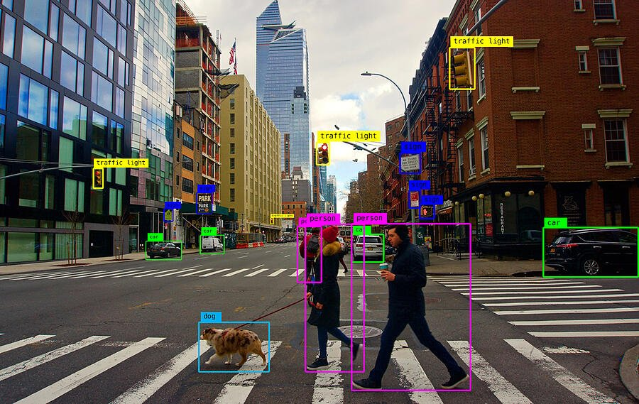
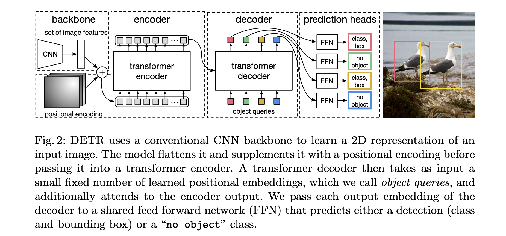
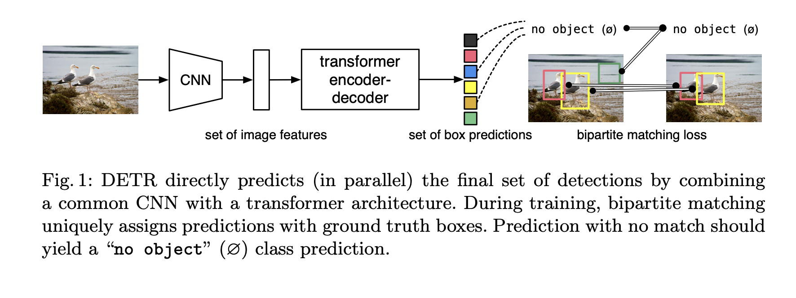
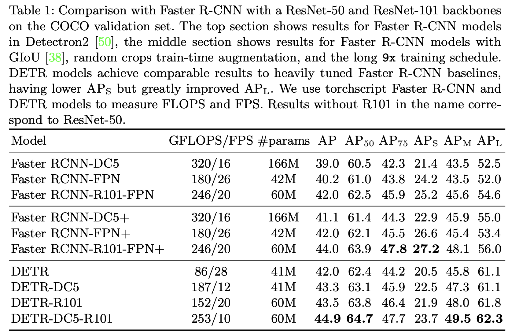
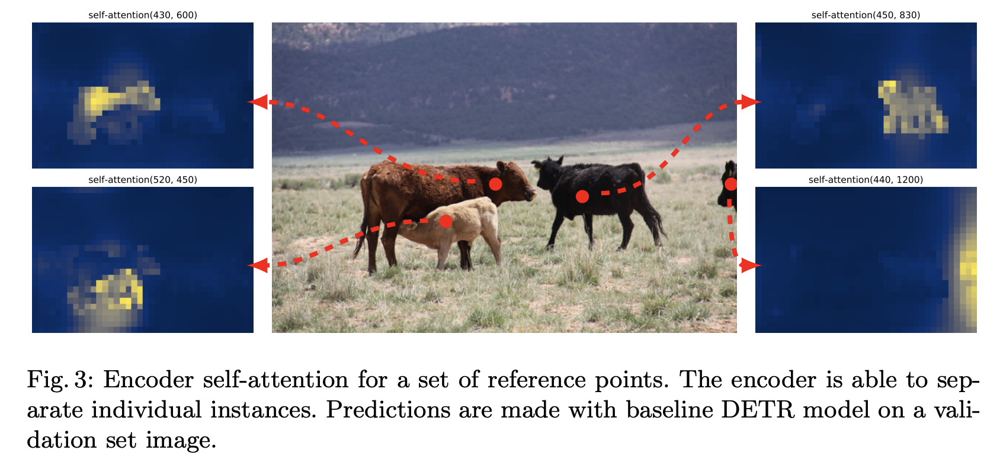

DETR - End-to-End Object Detection with Transformers
Disclaimer: None of this content is my own work. This includes any of the images on this site/on this page! The following is word-for-word copy-and-paste from the paper DETR - End-to-End Object Detection with Transformers for the purpose of illustrating what a technical blog post might look like. I figured filling the page with actual content probably looks a bit nicer than using the standard larum ipsum (If that's how it's spelled). Again, the following post containes no original content not provided by the DETR paper.
Abstract
We present a new method that views object detection as a direct set prediction problem. Our approach streamlines the detection pipeline, effectively removing the need for many hand-designed components like a non-maximum suppression procedure or anchor generation that explicitly encode our prior knowledge about the task. The main ingredients of the new framework, called DEtection TRansformer or DETR, are a set-based global loss that forces unique predictions via bipartite matching, and a transformer encoder-decoder architecture. Given a fixed small set of learned object queries, DETR reasons about the relations of the objects and the global image context to directly output the final set of predictions in parallel. The new model is conceptually simple and does not require a specialized library, unlike many other modern detectors. DETR demonstrates accuracy and run-time performance on par with the well-established and highly-optimized Faster RCNN baseline on the challenging COCO object detection dataset. Moreover, DETR can be easily generalized to produce panoptic segmentation in a unified manner. We show that it significantly outperforms competitive baselines. Training code and pretrained models are available at https://github.com/facebookresearch/detr.
Introduction
The goal of object detection is to predict a set of bounding boxes and category labels for each object of interest. Modern detectors address this set prediction task in an indirect way, by defining surrogate regression and classification problems on a large set of proposals [37,5], anchors [23], or window centers [53,46]. Their performances are significantly influenced by postprocessing steps to collapse near-duplicate predictions, by the design of the anchor sets and by the heuristics that assign target boxes to anchors [52]. To simplify these pipelines, we propose a direct set prediction approach to bypass the surrogate tasks. This end-to-end philosophy has led to significant advances in complex structured prediction tasks such as machine translation or speech recognition, but not yet in object detection: previous attempts [43,16,4,39] either add other forms of prior knowledge, or have not proven to be competitive with strong baselines on challenging benchmarks. This paper aims to bridge this gap.
We streamline the training pipeline by viewing object detection as a direct set prediction problem. We adopt an encoder-decoder architecture based on transformers [47], a popular architecture for sequence prediction. The self-attention mechanisms of transformers, which explicitly model all pairwise interactions between elements in a sequence, make these architectures particularly suitable for specific constraints of set prediction such as removing duplicate predictions.
Our DEtection TRansformer (DETR, see Figure 1) predicts all objects at once, and is trained end-to-end with a set loss function which performs bipartite matching between predicted and ground-truth objects. DETR simplifies the detection pipeline by dropping multiple hand-designed components that encode prior knowledge, like spatial anchors or non-maximal suppression. Unlike most existing detection methods, DETR doesn’t require any customized layers, and thus can be reproduced easily in any framework that contains standard CNN and transformer classes.
Compared to most previous work on direct set prediction, the main features of DETR are the conjunction of the bipartite matching loss and transformers with (non-autoregressive) parallel decoding [29,12,10,8]. In contrast, previous work focused on autoregressive decoding with RNNs [43,41,30,36,42]. Our matching loss function uniquely assigns a prediction to a ground truth object, and is invariant to a permutation of predicted objects, so we can emit them in parallel.
The DETR Model
The goal of object detection is to predict a set of bounding boxes and category labels for each object of interest. Modern detectors address this set prediction task in an indirect way, by defining surrogate regression and classification problems on a large set of proposals [37,5], anchors [23], or window centers [53,46]. Their performances are significantly influenced by postprocessing steps to collapse near-duplicate predictions, by the design of the anchor sets and by the heuristics that assign target boxes to anchors [52]. To simplify these pipelines, we propose a direct set prediction approach to bypass the surrogate tasks. This end-to-end philosophy has led to significant advances in complex structured prediction tasks such as machine translation or speech recognition, but not yet in object detection: previous attempts [43,16,4,39] either add other forms of prior knowledge, or have not proven to be competitive with strong baselines on challenging benchmarks. This paper aims to bridge this gap.
We streamline the training pipeline by viewing object detection as a direct set prediction problem. We adopt an encoder-decoder architecture based on transformers [47], a popular architecture for sequence prediction. The self-attention mechanisms of transformers, which explicitly model all pairwise interactions between elements in a sequence, make these architectures particularly suitable for specific constraints of set prediction such as removing duplicate predictions.
Our DEtection TRansformer (DETR, see Figure 1) predicts all objects at once, and is trained end-to-end with a set loss function which performs bipartite matching between predicted and ground-truth objects. DETR simplifies the detection pipeline by dropping multiple hand-designed components that encode prior knowledge, like spatial anchors or non-maximal suppression. Unlike most existing detection methods, DETR doesn’t require any customized layers, and thus can be reproduced easily in any framework that contains standard CNN and transformer classes.
Compared to most previous work on direct set prediction, the main features of DETR are the conjunction of the bipartite matching loss and transformers with (non-autoregressive) parallel decoding [29,12,10,8]. In contrast, previous work focused on autoregressive decoding with RNNs [43,41,30,36,42]. Our matching loss function uniquely assigns a prediction to a ground truth object, and is invariant to a permutation of predicted objects, so we can emit them in parallel.
Training
The goal of object detection is to predict a set of bounding boxes and category labels for each object of interest. Modern detectors address this set prediction task in an indirect way, by defining surrogate regression and classification problems on a large set of proposals [37,5], anchors [23], or window centers [53,46]. Their performances are significantly influenced by postprocessing steps to collapse near-duplicate predictions, by the design of the anchor sets and by the heuristics that assign target boxes to anchors [52]. To simplify these pipelines, we propose a direct set prediction approach to bypass the surrogate tasks. This end-to-end philosophy has led to significant advances in complex structured prediction tasks such as machine translation or speech recognition, but not yet in object detection: previous attempts [43,16,4,39] either add other forms of prior knowledge, or have not proven to be competitive with strong baselines on challenging benchmarks. This paper aims to bridge this gap.
We streamline the training pipeline by viewing object detection as a direct set prediction problem. We adopt an encoder-decoder architecture based on transformers [47], a popular architecture for sequence prediction. The self-attention mechanisms of transformers, which explicitly model all pairwise interactions between elements in a sequence, make these architectures particularly suitable for specific constraints of set prediction such as removing duplicate predictions.
Our DEtection TRansformer (DETR, see Figure 1) predicts all objects at once, and is trained end-to-end with a set loss function which performs bipartite matching between predicted and ground-truth objects. DETR simplifies the detection pipeline by dropping multiple hand-designed components that encode prior knowledge, like spatial anchors or non-maximal suppression. Unlike most existing detection methods, DETR doesn’t require any customized layers, and thus can be reproduced easily in any framework that contains standard CNN and transformer classes.
Compared to most previous work on direct set prediction, the main features of DETR are the conjunction of the bipartite matching loss and transformers with (non-autoregressive) parallel decoding [29,12,10,8]. In contrast, previous work focused on autoregressive decoding with RNNs [43,41,30,36,42]. Our matching loss function uniquely assigns a prediction to a ground truth object, and is invariant to a permutation of predicted objects, so we can emit them in parallel.
Results
The goal of object detection is to predict a set of bounding boxes and category labels for each object of interest. Modern detectors address this set prediction task in an indirect way, by defining surrogate regression and classification problems on a large set of proposals [37,5], anchors [23], or window centers [53,46]. Their performances are significantly influenced by postprocessing steps to collapse near-duplicate predictions, by the design of the anchor sets and by the heuristics that assign target boxes to anchors [52]. To simplify these pipelines, we propose a direct set prediction approach to bypass the surrogate tasks. This end-to-end philosophy has led to significant advances in complex structured prediction tasks such as machine translation or speech recognition, but not yet in object detection: previous attempts [43,16,4,39] either add other forms of prior knowledge, or have not proven to be competitive with strong baselines on challenging benchmarks. This paper aims to bridge this gap. We streamline the training pipeline by viewing object detection as a direct set prediction problem. We adopt an encoder-decoder architecture based on transformers [47], a popular architecture for sequence prediction. The self-attention mechanisms of transformers, which explicitly model all pairwise interactions between elements in a sequence, make these architectures particularly suitable for specific constraints of set prediction such as removing duplicate predictions.
Our DEtection TRansformer (DETR, see Figure 1) predicts all objects at once, and is trained end-to-end with a set loss function which performs bipartite matching between predicted and ground-truth objects. DETR simplifies the detection pipeline by dropping multiple hand-designed components that encode prior knowledge, like spatial anchors or non-maximal suppression. Unlike most existing detection methods, DETR doesn’t require any customized layers, and thus can be reproduced easily in any framework that contains standard CNN and transformer classes.Compared to most previous work on direct set prediction, the main features of DETR are the conjunction of the bipartite matching loss and transformers with (non-autoregressive) parallel decoding [29,12,10,8]. In contrast, previous work focused on autoregressive decoding with RNNs [43,41,30,36,42]. Our matching loss function uniquely assigns a prediction to a ground truth object, and is invariant to a permutation of predicted objects, so we can emit them in parallel.
Discussion
The goal of object detection is to predict a set of bounding boxes and category labels for each object of interest. Modern detectors address this set prediction task in an indirect way, by defining surrogate regression and classification problems on a large set of proposals [37,5], anchors [23], or window centers [53,46]. Their performances are significantly influenced by postprocessing steps to collapse near-duplicate predictions, by the design of the anchor sets and by the heuristics that assign target boxes to anchors [52]. To simplify these pipelines, we propose a direct set prediction approach to bypass the surrogate tasks. This end-to-end philosophy has led to significant advances in complex structured prediction tasks such as machine translation or speech recognition, but not yet in object detection: previous attempts [43,16,4,39] either add other forms of prior knowledge, or have not proven to be competitive with strong baselines on challenging benchmarks. This paper aims to bridge this gap. We streamline the training pipeline by viewing object detection as a direct set prediction problem. We adopt an encoder-decoder architecture based on transformers [47], a popular architecture for sequence prediction. The self-attention mechanisms of transformers, which explicitly model all pairwise interactions between elements in a sequence, make these architectures particularly suitable for specific constraints of set prediction such as removing duplicate predictions.
Our DEtection TRansformer (DETR, see Figure 1) predicts all objects at once, and is trained end-to-end with a set loss function which performs bipartite matching between predicted and ground-truth objects. DETR simplifies the detection pipeline by dropping multiple hand-designed components that encode prior knowledge, like spatial anchors or non-maximal suppression. Unlike most existing detection methods, DETR doesn’t require any customized layers, and thus can be reproduced easily in any framework that contains standard CNN and transformer classes.
Compared to most previous work on direct set prediction, the main features of DETR are the conjunction of the bipartite matching loss and transformers with (non-autoregressive) parallel decoding [29,12,10,8]. In contrast, previous work focused on autoregressive decoding with RNNs [43,41,30,36,42]. Our matching loss function uniquely assigns a prediction to a ground truth object, and is invariant to a permutation of predicted objects, so we can emit them in parallel.